Decision trees with smooth fuzzy splits for regression and classification — interpretable, smooth, and sklearn-compatible.
pip install FuzzyDTree
Standard decision trees produce jagged, discontinuous predictions. Small changes in input can cause a sample to jump between completely different leaf nodes. FuzzyDTree replaces hard thresholds with smooth compact-support membership functions, so each sample partially belongs to multiple leaves.
| Aspect | Hard Decision Tree | Fuzzy Decision Tree |
|---|---|---|
| Split function | x ≤ threshold ? left : right |
μ(x) = S((x - threshold) / margin) |
| Sample routing | Goes to exactly one leaf | Partially belongs to multiple leaves |
| Prediction surface | Piecewise constant (step functions) | Smooth, continuous transitions |
| Sensitivity to thresholds | Discontinuous at every split boundary | Gradual transition controlled by margin |
At each split node, instead of a hard left/right decision, a compact-support S-curve assigns a continuous degree of belonging to each child. The transition width (margin) is learned per split from a data-driven geometric grid.
Drag the margin slider to see how the transition width controls fuzziness. At margin→0, the S-curve becomes a hard step function (standard tree). Outside [threshold−margin, threshold+margin] the membership is exactly 0 or 1.
The package exposes two estimators plus a small set of inspection utilities. Both estimators follow the scikit-learn estimator interface and share the same tree-building machinery.
| Component | Type | Purpose | Main methods / attributes |
|---|---|---|---|
FuzzyTreeRegressor |
Estimator | Single-tree regression with fuzzy numeric splits and optional joint leaf-value refit. | fit, predict, score, feature_importances_ |
FuzzyTreeClassifier |
Estimator | Single-tree classification with fuzzy numeric splits and class-probability predictions. | fit, predict, predict_proba, classes_ |
plot_tree() |
Inspection method | Matplotlib rendering of split nodes, thresholds, margins, sample counts, and leaf values. | Available on fitted estimators |
explain_prediction() |
Inspection method | Per-sample explanation containing reached leaves, path weights, and feature contributions. | Available on fitted estimators |
plot_feature_contributions() |
Inspection method | Waterfall plot for the output of explain_prediction(). |
Available on fitted estimators |
| Area | Implementation |
|---|---|
| Numeric splits | Threshold and margin candidates are evaluated on pre-binned features using Numba-compiled kernels. |
| Membership function | Compact-support quadratic S-curve, controlled by a per-split margin. |
| Missing values | NaN routing direction is selected during split search and stored on the fitted node. |
| Categorical features | Optional categorical handling with binary partitions; columns can be supplied explicitly or auto-detected. |
| scikit-learn compatibility | get_params and set_params are implemented for estimator composition and model selection. |
A single-tree regressor with smooth compact-support fuzzy splits. Produces continuous prediction surfaces while remaining fully interpretable — you can visualize the tree, inspect feature importances, and explain individual predictions.
from fuzzydtree import FuzzyTreeRegressor from sklearn.datasets import fetch_california_housing from sklearn.model_selection import train_test_split X, y = fetch_california_housing(return_X_y=True) X_train, X_test, y_train, y_test = train_test_split(X, y, random_state=42) model = FuzzyTreeRegressor(max_depth=8) model.fit(X_train, y_train) y_pred = model.predict(X_test) print(f"R² = {model.score(X_test, y_test):.4f}")
x ≤ tμ = S((x−t)/margin)Synthetic 2D function: y = X0² − X1² + X1 − 1. 100 training points from [-1, 1]². Comparison with sklearn DecisionTree and RandomForest.
from fuzzydtree import FuzzyTreeRegressor from sklearn.tree import DecisionTreeRegressor from sklearn.ensemble import RandomForestRegressor est_fuzzy = FuzzyTreeRegressor(max_depth=5, optimize_leaf_values=True, leaf_l2=0.1) est_fuzzy.fit(X_train, y_train) est_tree = DecisionTreeRegressor(max_depth=5) est_tree.fit(X_train, y_train) est_rf = RandomForestRegressor(n_estimators=100, max_depth=5, random_state=0) est_rf.fit(X_train, y_train)
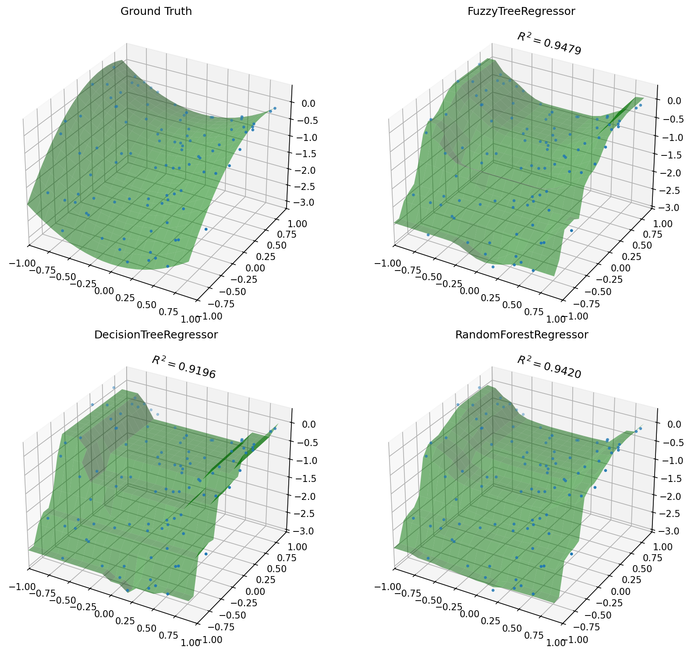
imp = est_fuzzy.feature_importances_
# X0: 0.xxx X1: 0.xxx
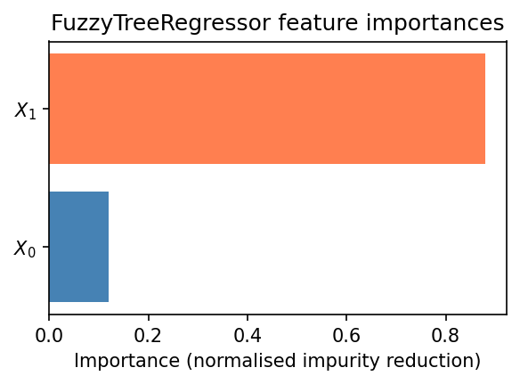
Inspect the learned tree structure including split features, thresholds, margin values, and leaf predictions.
fig, ax = plt.subplots(figsize=(14, 8)) est_fuzzy.plot_tree(feature_names=['$X_0$', '$X_1$'], ax=ax, fontsize=8) plt.show()
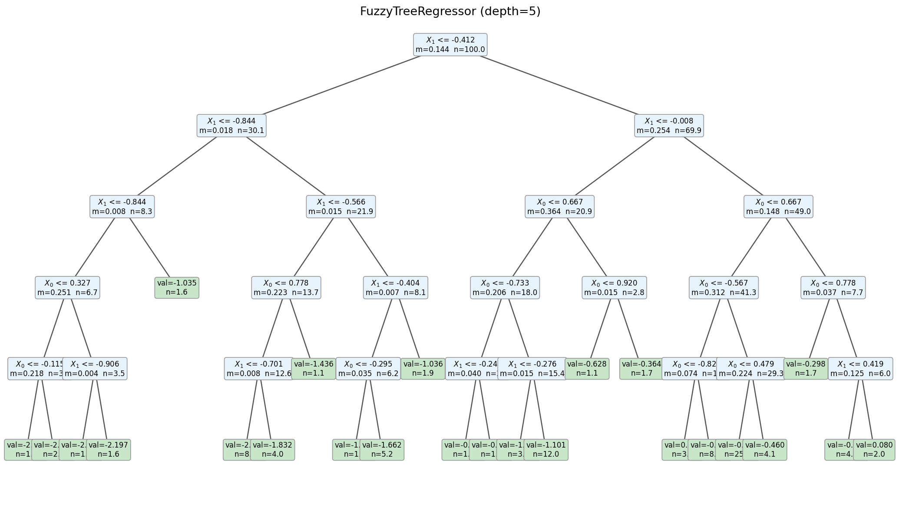
Predicting median house value (in $100k) from the California Housing dataset (20,640 samples, 8 features). No external data needed — sklearn downloads it automatically.
from fuzzydtree import FuzzyTreeRegressor from sklearn.datasets import fetch_california_housing from sklearn.model_selection import train_test_split data = fetch_california_housing() X_tr, X_te, y_tr, y_te = train_test_split( data.data, data.target, test_size=0.2, random_state=42) model = FuzzyTreeRegressor(max_depth=8, optimize_leaf_values=True) model.fit(X_tr, y_tr) print(f"R² = {model.score(X_te, y_te):.4f}")
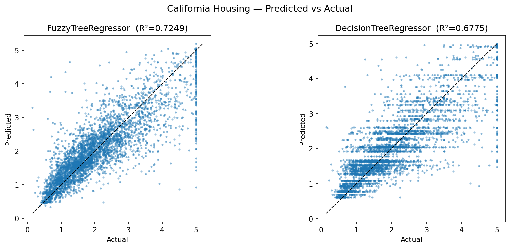
plot_feature_contributions() visualises how each feature pushes the prediction
away from the baseline (training mean). Green bars push up, red bars push down.
# Built-in waterfall plot model.plot_feature_contributions( X_te[idx], feature_names=data.feature_names, actual=y_te[idx] )
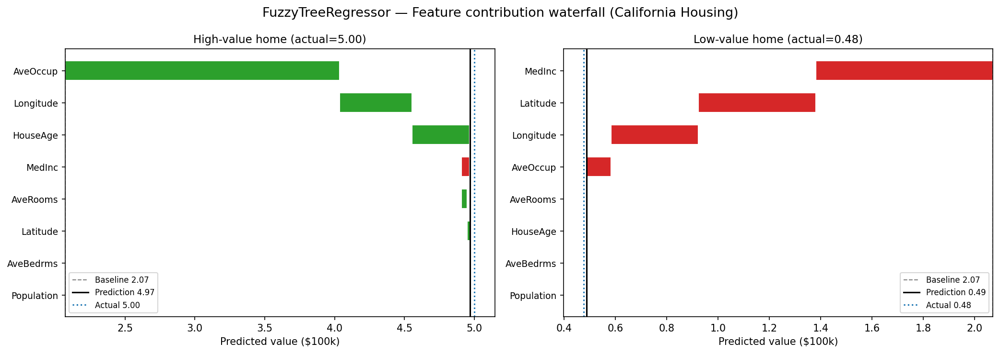
| Parameter | Default | Description |
|---|---|---|
max_depth | 5 | Maximum depth of the tree. |
max_leaves | None | Maximum leaf nodes. Enables best-first growth when set. |
min_samples_leaf | 1.0 | Minimum effective (weighted) sample count per child for a split to be accepted. |
max_features | None | Features considered per split. None = all. Accepts 'sqrt', 'log2', int, or float. |
margin_grid_size | 10 | Number of margin candidates in the geometric grid per split. |
max_bins | 256 | Maximum histogram bins for threshold candidates. |
min_train_weight_fraction | 0.01 | Minimum relative training weight retained when propagating fuzzy child weights. |
prebin_numeric | True | Pre-bin numeric features once before split search for faster histogram-based training. |
margin_depth_decay | 1.0 | Exponential decay factor for the margin upper bound at each depth level. |
optimize_leaf_values | True | Re-solve all leaf values jointly via weighted least-squares after tree construction. Produces substantially better predictions. |
optimize_split_gain | False | Use exact fuzzy two-leaf least-squares objective for split evaluation instead of the faster weighted child-mean approximation. |
leaf_l2 | 0.1 | L2 regularization for the joint leaf-value solve. |
categorical_features | None | Indices of categorical columns, or 'auto' for automatic detection. |
max_cat_threshold | 64 | Maximum number of unique values for a feature to be auto-detected as categorical. |
random_state | None | Random seed for reproducibility when using feature subsampling. |
A single-tree classifier with smooth compact-support fuzzy splits and logit-MSE/Gini split selection. Produces smooth decision boundaries and calibrated class probabilities while remaining fully interpretable.
from fuzzydtree import FuzzyTreeClassifier from sklearn.datasets import make_moons from sklearn.model_selection import train_test_split from sklearn.preprocessing import StandardScaler X, y = make_moons(n_samples=300, noise=0.25, random_state=0) X = StandardScaler().fit_transform(X) X_train, X_test, y_train, y_test = train_test_split(X, y, test_size=0.3, random_state=42) clf = FuzzyTreeClassifier(max_depth=5) clf.fit(X_train, y_train) print(f"Accuracy = {clf.score(X_test, y_test):.1%}") probs = clf.predict_proba(X_test) # shape: (n_samples, n_classes)
x ≤ tμ = S((x−t)/margin)
Breast Cancer and Iris provide binary and multiclass tabular classification examples.
The comparison reports held-out accuracy plus probability metrics for
predict_proba.
from sklearn.datasets import load_breast_cancer, load_iris from sklearn.metrics import accuracy_score, log_loss clf = FuzzyTreeClassifier( max_depth=5, min_samples_leaf=3, margin_grid_size=8, random_state=0, ) clf.fit(X_train, y_train) probs = clf.predict_proba(X_test) pred = clf.predict(X_test)
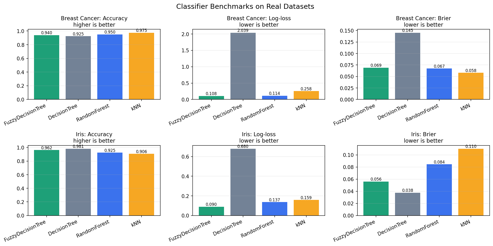
For classification, the most useful local explanation is often evidence for a class.
explain_prediction_log_odds() decomposes the selected class probability into
feature contributions in one-vs-rest log-odds, then converts the final log-odds back to probability.
exp = clf.explain_prediction_log_odds( X_test[i], class_label=0, # malignant in sklearn's Breast Cancer dataset feature_names=data.feature_names, ) print(exp["baseline_log_odds"], exp["prediction_log_odds"]) print(exp["prediction_probability"]) clf.plot_log_odds_contributions( X_test[i], class_label=0, feature_names=data.feature_names, )
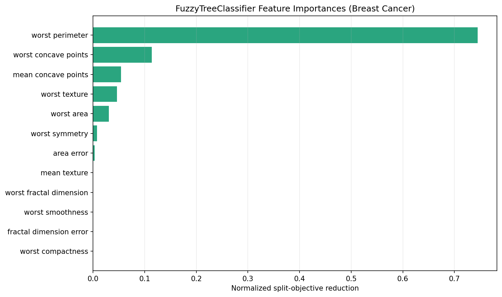
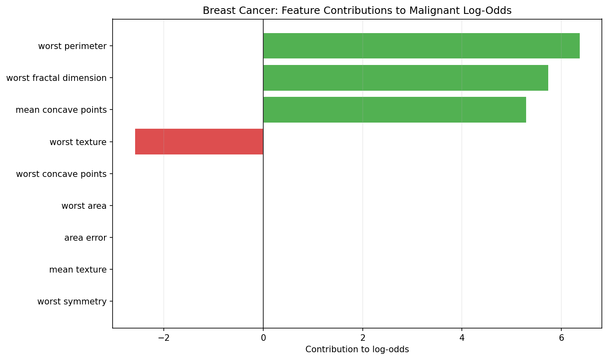
Iris is a compact three-class benchmark. The classifier handles multiclass labels directly, and each feature-pair panel below smooths the full-model predictions for the real Iris examples into a connected decision surface.
from fuzzydtree import FuzzyTreeClassifier from sklearn.datasets import load_iris from sklearn.model_selection import train_test_split X, y = load_iris(return_X_y=True) X_train, X_test, y_train, y_test = train_test_split( X, y, stratify=y, random_state=42) clf = FuzzyTreeClassifier(max_depth=5) clf.fit(X_train, y_train) # predict returns class labels, predict_proba returns (n_samples, 3) array labels = clf.predict(X_test) probs = clf.predict_proba(X_test) # shape: (n_samples, 3) score = clf.score(X_test, y_test)
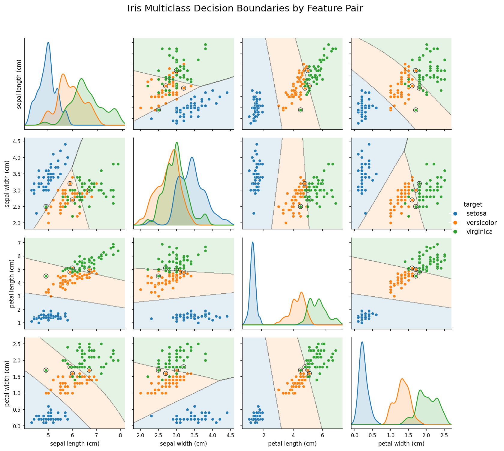
On two-dimensional datasets, fuzzy splits produce smooth probability transitions around decision boundaries instead of piecewise-constant rectangular regions.
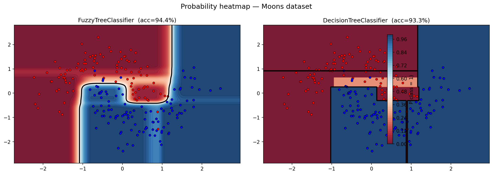
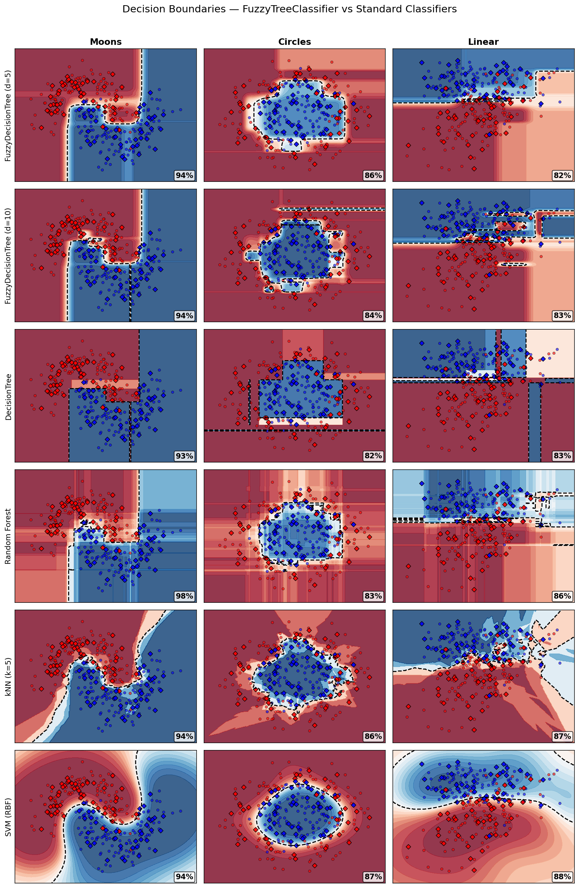
The classifier accepts all base tree parameters (it does not use the regressor-specific
optimize_leaf_values, optimize_split_gain, leaf_l2,
leaf_l2_mode, split_gain_l2, refine_splits,
refine_splits_max_iter, or refine_splits_candidates parameters):
| Parameter | Default | Description |
|---|---|---|
max_depth | 5 | Maximum depth of the tree. |
max_leaves | None | Maximum leaf nodes. Enables best-first growth when set. |
min_samples_leaf | 1.0 | Minimum effective (weighted) sample count per child for a split to be accepted. |
max_features | None | Features considered per split. None = all. Accepts 'sqrt', 'log2', int, or float. |
margin_grid_size | 10 | Number of margin candidates in the geometric grid per split. |
max_bins | 256 | Maximum histogram bins for threshold candidates. |
min_train_weight_fraction | 0.01 | Minimum relative training weight retained when propagating fuzzy child weights. |
prebin_numeric | True | Pre-bin numeric features once before split search for faster histogram-based training. |
margin_depth_decay | 1.0 | Exponential decay factor for the margin upper bound at each depth level. |
split_criterion | 'logit_mse' |
Split objective. 'logit_mse' and 'gini' use the local least-squares finite-logit objective; 'entropy' uses cross-entropy information gain. |
leaf_prediction | 'frequency' |
Probability model. 'frequency' uses fuzzy-weighted per-leaf class frequencies. Experimental alternatives: 'logit_mse' and 'logit_ce'. |
leaf_logit_l2 | 0.01 | L2 regularisation for logit leaf refits when leaf_prediction is a logit mode. |
leaf_logit_target | 4.0 | Finite one-vs-rest target logit magnitude for leaf_prediction='logit_mse'. |
leaf_logit_ce_max_iter | 100 | Maximum line-search iterations for leaf_prediction='logit_ce'. |
leaf_logit_ce_lr | 1.0 | Initial line-search step size for leaf_prediction='logit_ce'. |
leaf_logit_ce_tol | 1e-6 | Relative improvement tolerance for leaf_prediction='logit_ce'. |
categorical_features | None | Indices of categorical columns, or 'auto' for automatic detection. |
max_cat_threshold | 64 | Maximum number of unique values for a feature to be auto-detected as categorical. |
random_state | None | Random seed for reproducibility when using feature subsampling. |
Both models follow the sklearn estimator API. Methods are organized by model class.
from fuzzydtree import FuzzyTreeRegressor
X and target y. Accepts optional sample_weight array. Returns self.(n_samples,). Each prediction is a weighted average over all reachable leaves.baseline, prediction,
steps (per-split contributions), feature_contributions (aggregated by feature),
and leaves (all reached leaves with value, weight, and path).
fit().
from fuzzydtree import FuzzyTreeClassifier
X and labels y.
Supports binary and multiclass classification. Returns self.
(n_samples,).(n_samples, n_classes).
Probabilities are computed from the fuzzy-weighted mixture of leaf class distributions.
classes_.
baseline, prediction,
feature_contributions, and leaves (reached leaves with value, weight, and path).
fit().These examples are reproduced from the demo notebooks in the repository root. Run them yourself to generate the charts and explore the models interactively.
Notebook: regressor_demo.ipynb
Synthetic 2D function: y = X0² − X1² + X1 − 1. FuzzyTreeRegressor (R²=0.949) produces a smooth surface that beats both a hard DecisionTree (R²=0.920) and a 100-tree RandomForest (R²=0.942).
FuzzyTreeRegressor vs DecisionTreeRegressor on California Housing (20k samples, 8 features).
Built-in plot_feature_contributions() decomposes individual predictions
into per-feature contributions from the baseline.
Notebook: classifier_demo.ipynb
Breast Cancer and Iris benchmark runs comparing accuracy, log-loss, and Brier score against common sklearn classifiers.
Global split-objective importances identify the strongest features; the log-odds waterfall explains one prediction as evidence for the selected class and reports the resulting probability.
Pairwise Iris feature views with decision regions smoothed from the full fitted model's per-example predictions.
Smooth fuzzy splits produce gradual probability transitions around decision boundaries.
The demo notebooks are in the repository root and generate the charts shown in these docs:
fuzzydtree/ regressor_demo.ipynb # FuzzyTreeRegressor examples classifier_demo.ipynb # FuzzyTreeClassifier examples docs/ index.html # This documentation page generate_charts.py # Run to regenerate all chart images img/ # Generated chart images tree_surface_comparison.png tree_structure.png tree_feature_importances.png tree_predicted_vs_actual.png tree_explainability_waterfall.png classifier_real_benchmarks.png classifier_feature_importances.png classifier_log_odds_waterfall.png classifier_iris_probabilities.png classifier_decision_boundaries.png classifier_proba_heatmap.png classifier_multiclass.png